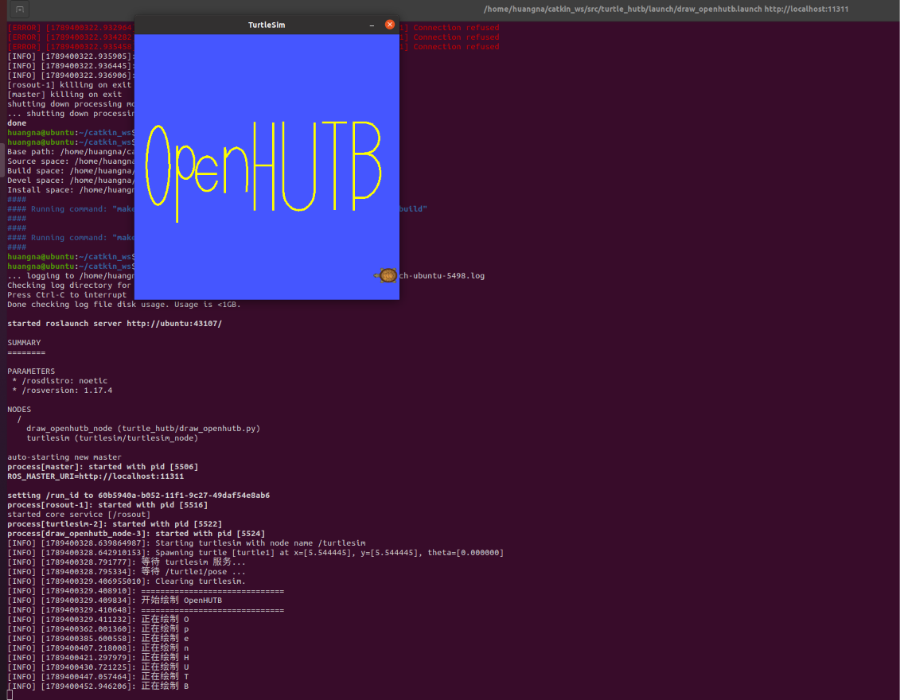

小海龟自动绘制 OpenHUTB
一、实验目的
本实验基于 Ubuntu 20.04、ROS Noetic 和 turtlesim，
编写 Python ROS 节点，使小海龟自动绘制 OpenHUTB 字样。
实验主要使用 ROS 的话题通信、服务调用以及闭环控制机制。
二、实验环境
| 项目 | 配置 |
|---|---|
| 操作系统 | Ubuntu 20.04 |
| ROS | ROS Noetic |
| 仿真器 | turtlesim |
| 编程语言 | Python 3 |
| 功能包 | turtle_hutb |
三、功能包结构
turtle_hutb/
├── CMakeLists.txt
├── package.xml
├── launch/
│ └── draw_openhutb.launch
└── scripts/
└── draw_openhutb.py四、实现原理
程序订阅：
/turtle1/pose获取小海龟实时的位置和方向。
程序向：
/turtle1/cmd_vel发布 geometry_msgs/Twist 消息，实现小海龟的运动控制。
同时调用：
/turtle1/set_pen控制画笔打开和关闭。
调用：
/turtle1/teleport_absolute在不同笔画之间无轨迹移动。
H、U、T、B 四个字符被分解为多组目标坐标， 小海龟通过位姿反馈逐个运动到目标点，从而绘制完整字符。
五、编译
首先进入仓库中第一章源码目录：
cd src/chap1进入工作空间：
cd ~/catkin_ws编译：
catkin_make加载环境：
source devel/setup.bash六、运行
可以直接运行：
roslaunch turtle_hutb draw_openhutb.launch也可以分别运行：
roscorerosrun turtlesim turtlesim_noderosrun turtle_hutb draw_openhutb.py七、实验结果
运行节点后，小海龟会依次绘制 O、p、e、n、
H、U、T、B，最终形成 OpenHUTB 字样。
轨迹使用亮黄色，与 turtlesim 默认蓝色背景形成明显对比， 便于观察最终绘制结果。
程序利用 /turtle1/pose 的实时反馈进行闭环控制，
相比仅使用固定运行时间的开环控制方式，可以获得更加稳定的轨迹。

八、总结
本实验通过 turtlesim 熟悉了 ROS 中发布者、订阅者和服务的基本使用方式， 并通过闭环控制完成了较复杂的多字符轨迹绘制任务。